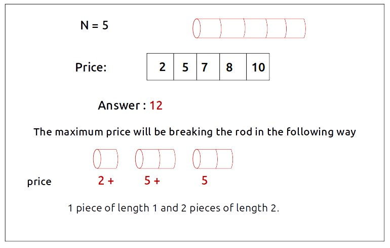
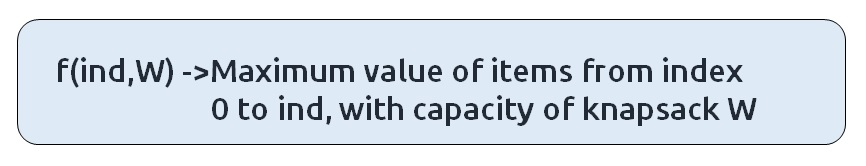
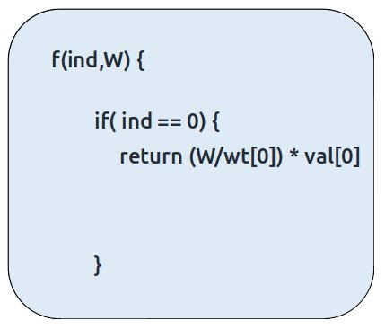
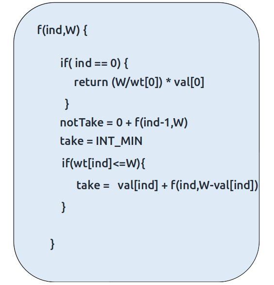
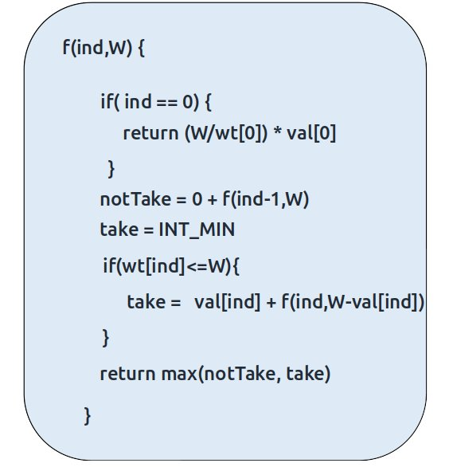
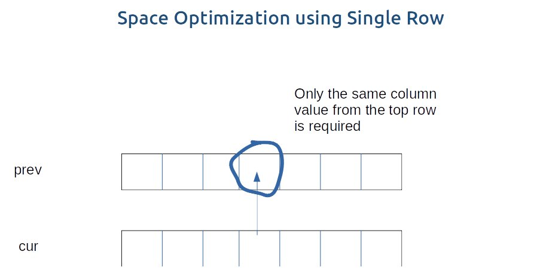

Problem Statement: Rod Cutting Problem
Problem Link: Rod Cutting Problem
We are given a rod of size ‘N’. It can be cut into pieces. Each length of a piece has a particular price given by the price array. Our task is to find the maximum revenue that can be generated by selling the rod after cutting( if required) into pieces.
Examples
Example: 

Disclaimer: Don’t jump directly to the solution, try it out yourself first.
Memoization Approach
Algorithm / Intuition
Why a Greedy Solution doesn’t work?
The first approach that comes to our mind is greedy. A greedy solution will fail in this problem because there is no ‘uniformity’ in data. While selecting a local better choice we may choose an item that will in long term give less value.
As the greedy approach doesn’t work, we will try to generate all possible combinations using recursion and select the combination which gives us the maximum value in the given constraints.
Steps to form the recursive solution:
We will first form the recursive solution by the three points mentioned in Dynamic Programming Introduction.
Step 1: Express the problem in terms of indexes.
We are given ‘n’ items. Their weight is represented by the ‘wt’ array and value by the ‘val’ array. So clearly one parameter will be ‘ind’, i.e index upto which the array items are being considered.
There is one more parameter “W”. We need the capacity of the knapsack to decide whether we can pick an array item or not in the knapsack.
So, we can say that initially, we need to find f(n-1, W) where W is the overall capacity given to us. f(n-1, W) means we are finding the maximum value of items that the thief can steal from items with index 0 to n-1 capacity W of the knapsack.

Base Cases:
- If ind==0, it means we are at the first item. Now, in an unbounded knapsack we can pick an item any number of times we want. As there is only one item left, we will pick for W/wt[0] times because we ultimately want to maximize the value of items while respecting the constraint of weight of the knapsack. The value added will be the product of the number of items picked and value of the individual item. Therefore we return (W/wt[0]) * val[0].

Step 2: Try out all possible choices at a given index.
We need to generate all the subsequences. We will use the pick/non-pick technique as discussed in this video “Recursion on Subsequences”.
We have two choices:
- Exclude the current element in the subsequence: We first try to find a subsequence without considering the current index item. If we exclude the current item, the capacity of the bag will not be affected and the value added will be 0 for the current item. So we will call the recursive function f(ind-1,W)
- Include the current element in the subsequence: We will try to find a subsequence by considering the current item to the knapsack. As we have included the item, the capacity of the knapsack will be updated to W-wt[ind] and the current item’s value (val[ind]) will also be added to the further recursive call answer.
Now here is the catch, as there is an unlimited supply of coins, we want to again form a solution with the same item value. So we will not recursively call for f(ind-1, W-wt[ind]) rather we will stay at that index only and call for f(ind, W-wt[ind]) to find the answer.
Note: We will consider the current item in the subsequence only when the current element’s weight is less than or equal to the capacity ‘W’ of the knapsack, if it isn’t we will not be considering it.

Step 3: Return the maximum of take and notTake
As we have to return the maximum amount of value, we will return the max of take and notTake as our answer.
The final pseudocode after steps 1, 2, and 3:

Steps to memoize a recursive solution:
If we draw the recursion tree, we will see that there are overlapping subproblems. In order to convert a recursive solution the following steps will be taken:
- Create a dp array of size [n][W+1]. The size of the input array is ‘N’, so the index will always lie between ‘0’ and ‘n-1’. The capacity can take any value between ‘0’ and ‘W’. Therefore we take the dp array as dp[n][W+1]
- We initialize the dp array to -1.
- Whenever we want to find the answer of particular parameters (say f(ind,target)), we first check whether the answer is already calculated using the dp array(i.e dp[ind][target]!= -1 ). If yes, simply return the value from the dp array.
- If not, then we are finding the answer for the given value for the first time, we will use the recursive relation as usual but before returning from the function, we will set dp[ind][target] to the solution we get.
Code
#include <bits/stdc++.h>
using namespace std;
// Function to solve the unbounded knapsack problem
int knapsackUtil(vector<int>& wt, vector<int>& val, int ind, int W, vector<vector<int>>& dp) {
// Base case: if we're at the first item
if (ind == 0) {
// Calculate and return the maximum value for the given weight limit
return (W / wt[0]) * val[0];
}
// If the result for this index and weight limit is already calculated, return it
if (dp[ind][W] != -1)
return dp[ind][W];
// Calculate the maximum value without taking the current item
int notTaken = 0 + knapsackUtil(wt, val, ind - 1, W, dp);
// Calculate the maximum value by taking the current item
int taken = INT_MIN;
if (wt[ind] <= W)
taken = val[ind] + knapsackUtil(wt, val, ind, W - wt[ind], dp);
// Store the maximum value in the DP table and return it
return dp[ind][W] = max(notTaken, taken);
}
// Function to solve the unbounded knapsack problem
int unboundedKnapsack(int n, int W, vector<int>& val, vector<int>& wt) {
vector<vector<int>> dp(n, vector<int>(W + 1, -1)); // Create a DP table
// Call the utility function to calculate the maximum value
return knapsackUtil(wt, val, n - 1, W, dp);
}
int main() {
vector<int> wt = {2, 4, 6}; // Weight of items
vector<int> val = {5, 11, 13}; // Value of items
int W = 10; // Weight capacity of the knapsack
int n = wt.size(); // Number of items
// Call the function to calculate and output the maximum value the thief can steal
cout << "The Maximum value of items the thief can steal is " << unboundedKnapsack(n, W, val, wt) << endl;
return 0; // Return 0 to indicate successful program execution
}
import java.util.*;
class TUF {
// Recursive function to solve the unbounded knapsack problem
static int knapsackUtil(int[] wt, int[] val, int ind, int W, int[][] dp) {
// Base case: If there are no more items to consider
if (ind == 0) {
// Calculate and return the maximum value possible
return ((int) (W / wt[0])) * val[0];
}
// If the result for this subproblem has already been calculated, return it
if (dp[ind][W] != -1)
return dp[ind][W];
// Calculate the maximum value when the current item is not taken
int notTaken = 0 + knapsackUtil(wt, val, ind - 1, W, dp);
// Initialize the maximum value when the current item is taken as the minimum integer value
int taken = Integer.MIN_VALUE;
// If the weight of the current item is less than or equal to the available capacity (W),
// calculate the maximum value when the current item is taken
if (wt[ind] <= W)
taken = val[ind] + knapsackUtil(wt, val, ind, W - wt[ind], dp);
// Store the result in the dp array and return it
return dp[ind][W] = Math.max(notTaken, taken);
}
// Function to find the maximum value of items that the thief can steal
static int unboundedKnapsack(int n, int W, int[] val, int[] wt) {
// Create a 2D array to store results of subproblems
int[][] dp = new int[n][W + 1];
// Initialize the dp array with -1 to indicate that subproblems are not solved yet
for (int row[] : dp)
Arrays.fill(row, -1);
// Call the knapsackUtil function to solve the problem
return knapsackUtil(wt, val, n - 1, W, dp);
}
public static void main(String args[]) {
int wt[] = { 2, 4, 6 };
int val[] = { 5, 11, 13 };
int W = 10;
int n = wt.length;
// Call the unboundedKnapsack function and print the result
System.out.println("The Maximum value of items, the thief can steal is " + unboundedKnapsack(n, W, val, wt));
}
}
import sys
# Recursive function to solve the unbounded knapsack problem
def knapsackUtil(wt, val, ind, W, dp):
# Base case: If there are no more items to consider (index is 0)
if ind == 0:
return (W // wt[0]) * val[0]
# If the result for this state is already calculated, return it
if dp[ind][W] != -1:
return dp[ind][W]
# Calculate the maximum value when the current item is not taken
notTaken = knapsackUtil(wt, val, ind - 1, W, dp)
# Initialize a variable to store the maximum value when the current item is taken
taken = -sys.maxsize
if wt[ind] <= W:
taken = val[ind] + knapsackUtil(wt, val, ind, W - wt[ind], dp)
# Store the maximum of "notTaken" and "taken" in the DP table
dp[ind][W] = max(notTaken, taken)
return dp[ind][W]
# Function to find the maximum value that can be obtained in unbounded knapsack
def unboundedKnapsack(n, W, val, wt):
# Create a DP table initialized with -1
dp = [[-1 for _ in range(W + 1)] for _ in range(n)]
return knapsackUtil(wt, val, n - 1, W, dp)
def main():
wt = [2, 4, 6]
val = [5, 11, 13]
W = 10
n = len(wt)
print("The Maximum value of items the thief can steal is", unboundedKnapsack(n, W, val, wt))
if __name__ == "__main__":
main()
function unboundedKnapsack(n, W, val, wt) {
// Create a 2D array 'dp' to store dynamic programming results, initialized with -1
const dp = Array.from({ length: n }, () => Array(W + 1).fill(-1));
// Define a recursive utility function to calculate the maximum value
function knapsackUtil(ind, W) {
// Base case: If we have reached the first item in the array
if (ind === 0) {
// Calculate the maximum value for this item
return Math.floor(W / wt[0]) * val[0];
}
// If the result for this combination of 'ind' and 'W' has already been calculated, return it
if (dp[ind][W] !== -1)
return dp[ind][W];
// Initialize variables to store results
let notTaken = 0 + knapsackUtil(ind - 1, W);
let taken = -Infinity;
if (wt[ind] <= W)
taken = val[ind] + knapsackUtil(ind, W - wt[ind]);
// Store and return the result
return dp[ind][W] = Math.max(notTaken, taken);
}
// Call the recursive utility function to calculate the maximum value
return knapsackUtil(n - 1, W);
}
// Main function
function main() {
const wt = [2, 4, 6];
const val = [5, 11, 13];
const W = 10;
const n = wt.length;
// Call the unboundedKnapsack function and print the result
console.log("The Maximum value of items the thief can steal is " + unboundedKnapsack(n, W, val, wt));
}
// Call the main function to start the program
main();
Output: The Maximum value of items, thief can steal is 27
Complexity Analysis
Time Complexity: O(N*W)
Reason: There are N*W states therefore at max ‘N*W’ new problems will be solved.
Space Complexity: O(N*W) + O(N)
Reason: We are using a recursion stack space(O(N)) and a 2D array ( O(N*W)).
Tabulation Approach
Algorithm / Intuition
To convert the memoization approach to a tabulation one, create a dp array with the same size as done in memoization. We can initialize it as 0.
First, we need to initialize the base conditions of the recursive solution.
- At ind==0, we are considering the first element, so we will assign its value as (i/wt[0]) * val[0], where i will iterate from 0 to W.
- Next, we are done for the first row, so our ‘ind’ variable will move from 1 to n-1, whereas our ‘cap’ variable will move from 0 to ‘W’. We will set the nested loops to traverse the dp array.
- Inside the nested loops we will apply the recursive logic to find the answer of the cell.
- When the nested loop execution has ended, we will return dp[n-1][W] as our answer.
Code
#include <bits/stdc++.h>
using namespace std;
// Function to solve the unbounded knapsack problem
int unboundedKnapsack(int n, int W, vector<int>& val, vector<int>& wt) {
vector<vector<int>> dp(n, vector<int>(W + 1, 0)); // Create a DP table
// Base Condition
for (int i = wt[0]; i <= W; i++) {
dp[0][i] = (i / wt[0]) * val[0]; // Calculate the maximum value for the first item
}
for (int ind = 1; ind < n; ind++) {
for (int cap = 0; cap <= W; cap++) {
int notTaken = 0 + dp[ind - 1][cap]; // Maximum value without taking the current item
int taken = INT_MIN;
if (wt[ind] <= cap)
taken = val[ind] + dp[ind][cap - wt[ind]]; // Maximum value by taking the current item
dp[ind][cap] = max(notTaken, taken); // Store the maximum value in the DP table
}
}
return dp[n - 1][W]; // Return the maximum value considering all items and the knapsack capacity
}
int main() {
vector<int> wt = {2, 4, 6}; // Weight of items
vector<int> val = {5, 11, 13}; // Value of items
int W = 10; // Weight capacity of the knapsack
int n = wt.size(); // Number of items
// Call the function to calculate and output the maximum value the thief can steal
cout << "The Maximum value of items the thief can steal is " << unboundedKnapsack(n, W, val, wt) << endl;
return 0; // Return 0 to indicate successful program execution
}
import java.util.*;
class TUF {
// Function to solve the unbounded knapsack problem
static int unboundedKnapsack(int n, int W, int[] val, int[] wt) {
// Create a 2D array to store results of subproblems
int[][] dp = new int[n][W + 1];
// Base condition: Initialize the dp array for the first item
for (int i = wt[0]; i <= W; i++) {
dp[0][i] = ((int) i / wt[0]) * val[0];
}
// Fill the dp array using dynamic programming
for (int ind = 1; ind < n; ind++) {
for (int cap = 0; cap <= W; cap++) {
// Calculate the maximum value when the current item is not taken
int notTaken = 0 + dp[ind - 1][cap];
// Initialize the maximum value when the current item is taken as the minimum integer value
int taken = Integer.MIN_VALUE;
// If the weight of the current item is less than or equal to the current capacity (cap),
// calculate the maximum value when the current item is taken
if (wt[ind] <= cap)
taken = val[ind] + dp[ind][cap - wt[ind]];
// Store the result in the dp array
dp[ind][cap] = Math.max(notTaken, taken);
}
}
return dp[n - 1][W]; // Return the maximum value that can be obtained
}
public static void main(String args[]) {
int wt[] = { 2, 4, 6 };
int val[] = { 5, 11, 13 };
int W = 10;
int n = wt.length;
// Call the unboundedKnapsack function and print the result
System.out.println("The Maximum value of items the thief can steal is " + unboundedKnapsack(n, W, val, wt));
}
}
import sys
# Function to solve the unbounded knapsack problem using dynamic programming
def unboundedKnapsack(n, W, val, wt):
# Create a DP table to store the maximum value for different capacities
dp = [[0 for j in range(W + 1)] for i in range(n)]
# Initialize the base condition for the first item
for i in range(wt[0], W + 1, wt[0]):
dp[0][i] = ((i // wt[0]) * val[0])
# Fill in the DP table for the remaining items and capacities
for ind in range(1, n):
for cap in range(W + 1):
# Calculate the maximum value when the current item is not taken
notTaken = 0 + dp[ind - 1][cap]
# Initialize a variable to store the maximum value when the current item is taken
taken = -sys.maxsize
if wt[ind] <= cap:
taken = val[ind] + dp[ind][cap - wt[ind]]
# Store the maximum of "notTaken" and "taken" in the DP table
dp[ind][cap] = max(notTaken, taken)
# The maximum value for the entire knapsack is at dp[n-1][W]
return dp[n - 1][W]
def main():
wt = [2, 4, 6]
val = [5, 11, 13]
W = 10
n = len(wt)
print("The Maximum value of items the thief can steal is", unboundedKnapsack(n, W, val, wt))
if __name__ == "__main__":
main()
function unboundedKnapsack(n, W, val, wt) {
// Create a 2D array 'dp' to store dynamic programming results, initialized with 0
const dp = Array.from({ length: n }, () => Array(W + 1).fill(0));
// Initializing the base condition for the first item in the array
for (let i = wt[0]; i <= W; i++) {
dp[0][i] = Math.floor(i / wt[0]) * val[0];
}
// Populating the dp array using nested loops
for (let ind = 1; ind < n; ind++) {
for (let cap = 0; cap <= W; cap++) {
const notTaken = dp[ind - 1][cap];
let taken = -Infinity;
if (wt[ind] <= cap)
taken = val[ind] + dp[ind][cap - wt[ind]];
dp[ind][cap] = Math.max(notTaken, taken);
}
}
// The result is stored in the bottom-right cell of the dp array
return dp[n - 1][W];
}
// Main function
function main() {
const wt = [2, 4, 6];
const val = [5, 11, 13];
const W = 10;
const n = wt.length;
// Call the unboundedKnapsack function and print the result
console.log("The Maximum value of items the thief can steal is " + unboundedKnapsack(n, W, val, wt));
}
// Call the main function to start the program
main();
Output: The Maximum value of items, thief can steal is 27
Complexity Analysis
Time Complexity: O(N*W)
Reason: There are two nested loops
Space Complexity: O(N*W)
Reason: We are using an external array of size ‘N*W’. Stack Space is eliminated.
Space Optimization Approach
Algorithm / Intuition
If we closely look the relation,
dp[ind][cap] = max(dp[ind-1][cap] ,dp[ind][cap-wt[ind]]
We see that to calculate a value of a cell of the dp array, we need only the previous row values (say prev). So, we don’t need to store an entire array. Hence we can space optimize it.
We will be space optimizing this solution using only one row.
Intuition:
If we clearly see the values required: dp[ind-1][cap] and dp[ind-1][cap - wt[ind]], we can say that if we are at a column cap, we will only require the values shown in the blue box(of the same column) from the previous row and other values will be from the cur row itself. So why do we need to store an entire array for it?

If we need only one value from the prev row, there is no need to store an entire row. We can work a bit smarter.
We can use the cur row itself to store the required value in the following way:
- We somehow make sure that the previous value( say preValue) is available to us in some manner ( we will discuss later how we got the value).
- Now, let us say that we want to find the value of cell cur[3], by going through the relation we find that we need a preValue and one value from the cur row.
- We see that to calculate the cur[3] element, we need only a single variable (preValue). The catch is that we can initially place this preValue at the position cur[3] (before finding its updated value) and later while calculating for the current row’s cell cur[3], the value present there automatically serves as the preValue and we can use it to find the required cur[3] value. ( If there is any confusion please see the code).
- After calculating the cur[3] value we store it at the cur[3] position so this cur[3] will automatically serve as preValue for the next row. In this way, we space-optimize the tabulation approach by just using one row.
Code
#include <bits/stdc++.h>
using namespace std;
// Function to solve the unbounded knapsack problem
int unboundedKnapsack(int n, int W, vector<int>& val, vector<int>& wt) {
vector<int> cur(W + 1, 0); // Create a vector to store the current DP state
// Base Condition
for (int i = wt[0]; i <= W; i++) {
cur[i] = (i / wt[0]) * val[0]; // Calculate the maximum value for the first item
}
for (int ind = 1; ind < n; ind++) {
for (int cap = 0; cap <= W; cap++) {
int notTaken = cur[cap]; // Maximum value without taking the current item
int taken = INT_MIN;
if (wt[ind] <= cap)
taken = val[ind] + cur[cap - wt[ind]]; // Maximum value by taking the current item
cur[cap] = max(notTaken, taken); // Store the maximum value in the current DP state
}
}
return cur[W]; // Return the maximum value considering all items and the knapsack capacity
}
int main() {
vector<int> wt = {2, 4, 6}; // Weight of items
vector<int> val = {5, 11, 13}; // Value of items
int W = 10; // Weight capacity of the knapsack
int n = wt.size(); // Number of items
// Call the function to calculate and output the maximum value the thief can steal
cout << "The Maximum value of items the thief can steal is " << unboundedKnapsack(n, W, val, wt) << endl;
return 0; // Return 0 to indicate successful program execution
}
import java.util.*;
class TUF {
// Function to solve the unbounded knapsack problem
static int unboundedKnapsack(int n, int W, int[] val, int[] wt) {
// Create an array to store the maximum value for each capacity from 0 to W
int cur[] = new int[W + 1];
// Base condition: Initialize the cur array for the first item
for (int i = wt[0]; i <= W; i++) {
cur[i] = ((int) i / wt[0]) * val[0];
}
// Fill the cur array using dynamic programming
for (int ind = 1; ind < n; ind++) {
for (int cap = 0; cap <= W; cap++) {
// Calculate the maximum value when the current item is not taken
int notTaken = cur[cap];
// Initialize the maximum value when the current item is taken as the minimum integer value
int taken = Integer.MIN_VALUE;
// If the weight of the current item is less than or equal to the current capacity (cap),
// calculate the maximum value when the current item is taken
if (wt[ind] <= cap)
taken = val[ind] + cur[cap - wt[ind]];
// Store the result in the cur array
cur[cap] = Math.max(notTaken, taken);
}
}
return cur[W]; // Return the maximum value that can be obtained with the given capacity W
}
public static void main(String args[]) {
int wt[] = { 2, 4, 6 };
int val[] = { 5, 11, 13 };
int W = 10;
int n = wt.length;
// Call the unboundedKnapsack function and print the result
System.out.println("The Maximum value of items the thief can steal is " + unboundedKnapsack(n, W, val, wt));
}
}
import sys
# Function to solve the unbounded knapsack problem using dynamic programming
def unboundedKnapsack(n, W, val, wt):
# Create a list 'cur' to store the maximum value for different capacities
cur = [0] * (W + 1)
# Initialize the base condition for the first item
for i in range(wt[0], W + 1):
cur[i] = (i // wt[0]) * val[0]
# Fill in the 'cur' list for the remaining items and capacities
for ind in range(1, n):
for cap in range(W + 1):
# Calculate the maximum value when the current item is not taken
notTaken = cur[cap]
# Initialize a variable to store the maximum value when the current item is taken
taken = -sys.maxsize
if wt[ind] <= cap:
taken = val[ind] + cur[cap - wt[ind]]
# Store the maximum of "notTaken" and "taken" in the 'cur' list
cur[cap] = max(notTaken, taken)
# The maximum value for the entire knapsack is at 'cur[W]'
return cur[W]
def main():
wt = [2, 4, 6]
val = [5, 11, 13]
W = 10
n = len(wt)
print("The Maximum value of items the thief can steal is", unboundedKnapsack(n, W, val, wt))
if __name__ == "__main__":
main()
function unboundedKnapsack(n, W, val, wt) {
// Initialize an array 'cur' to store dynamic programming results, initialized with 0
const cur = new Array(W + 1).fill(0);
// Initializing the base condition for the first item in the array
for (let i = wt[0]; i <= W; i++) {
cur[i] = Math.floor(i / wt[0]) * val[0];
}
// Populating the 'cur' array using nested loops
for (let ind = 1; ind < n; ind++) {
for (let cap = 0; cap <= W; cap++) {
const notTaken = cur[cap];
let taken = -Infinity;
if (wt[ind] <= cap)
taken = val[ind] + cur[cap - wt[ind]];
cur[cap] = Math.max(notTaken, taken);
}
}
// The result is stored in the last element of the 'cur' array
return cur[W];
}
// Main function
function main() {
const wt = [2, 4, 6];
const val = [5, 11, 13];
const W = 10;
const n = wt.length;
// Call the unboundedKnapsack function and print the result
console.log("The Maximum value of items the thief can steal is " + unboundedKnapsack(n, W, val, wt));
}
// Call the main function to start the program
main();
Output:The Maximum value of items, thief can steal is 27
Complexity Analysis
Time Complexity: O(N*W)
Reason: There are two nested loops.
Space Complexity: O(W)
Reason: We are using an external array of size ‘W+1’ to store only one row.
Video Explanation
Special thanks to Anshuman Sharma and Abhipsita Das for contributing to this article on takeUforward. If you also wish to share your knowledge with the takeUforward fam, please check out this article